Una revisión detallada de los conocimientos adquiridos, desafíos superados y proyectos realizados a lo largo de la carrera.
El manejo de entornos a nivel de consola como DOS me permitió comprender en profundidad el funcionamiento interno de los sistemas computacionales. Esta competencia es vital para la capacidad de instalar, configurar y administrar de manera profesional los entornos tecnológicos requeridos en cualquier equipo de desarrollo.
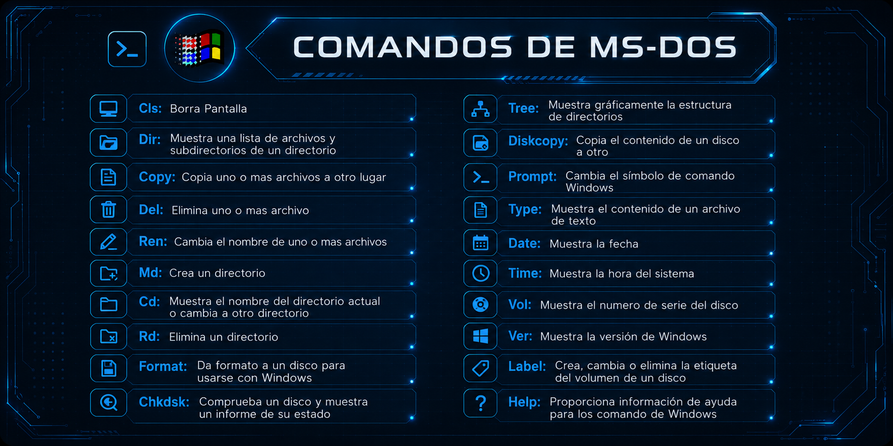
El aprendizaje de Python y JavaScript fortaleció significativamente mi lógica computacional y mi habilidad para estructurar algoritmos complejos. Estudiar estructuras de control de flujo y los fundamentos de la programación orientada a objetos (POO) me dotó de las bases necesarias para escribir código organizado, limpio y funcional.
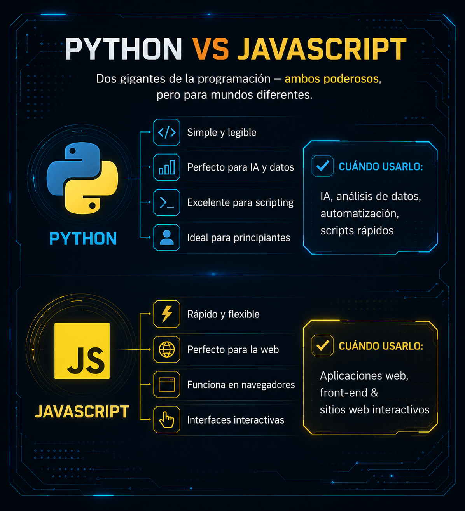
La maquetación utilizando HTML y CSS estructuró mis bases sobre el diseño de interfaces web responsivas. Comprendí la importancia de la experiencia de usuario (UX/UI), asegurándome de que las soluciones digitales cuenten con una presentación visual organizada, accesible y adaptada a las necesidades del cliente.
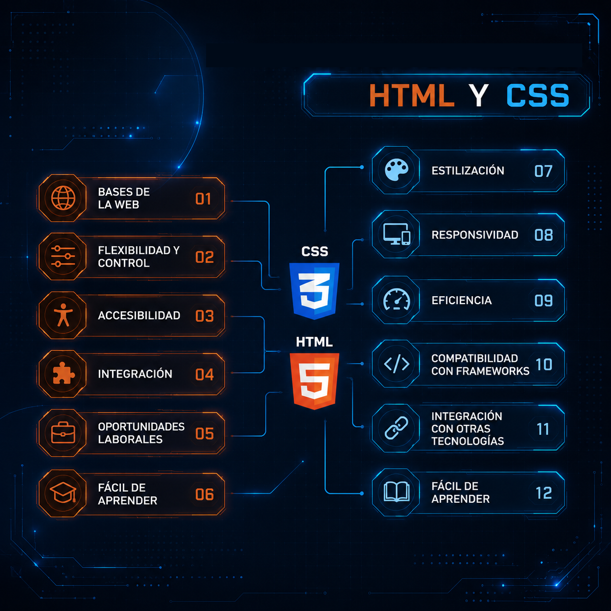
La gestión estructurada de datos a través de MySQL me otorgó destrezas indispensables en la creación de esquemas relacionales, la optimización de consultas SQL y la integridad referencial de los datos. También abordamos SQL Server, el cual presentaba una mayor complejidad, siendo MySQL mi herramienta principal de uso.
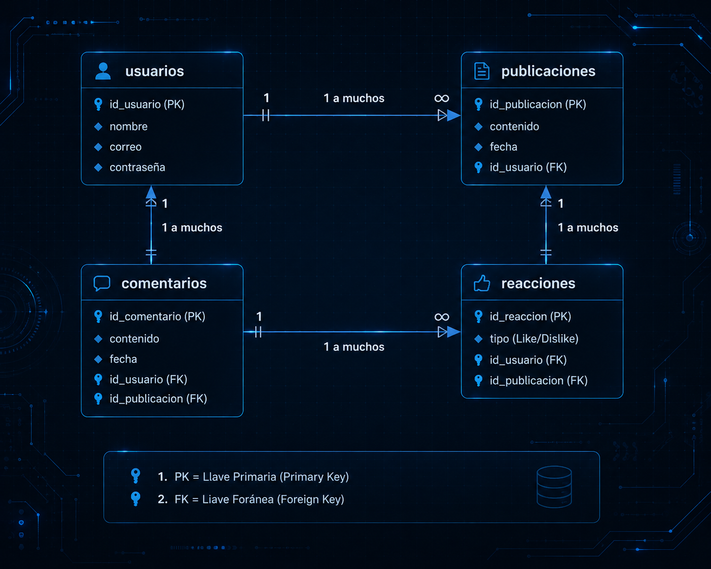
Como hito práctico del primer año, integré todas estas herramientas en un proyecto real: una red social similar a FriendSpace. Con Visual Studio Code para el desarrollo de código y MySQL para la persistencia, implementé funciones avanzadas que validan mi capacidad técnica e integradora en escenarios de interacción de usuarios.
Puedes experimentar este proyecto de forma interactiva en la página dedicada: Ir al Simulador de Red Social .
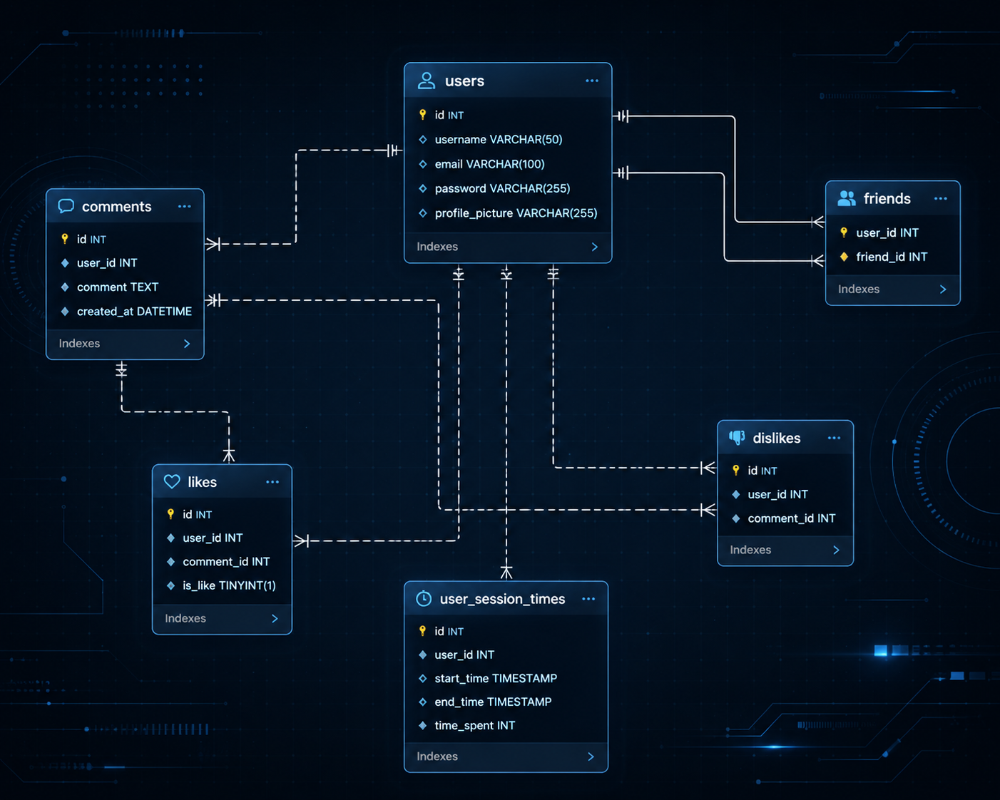
Adquirí metodologías formales para planificar y estructurar el ciclo de vida del software, controlando variables críticas como objetivos, alcance, recursos y riesgos. Además, fortalecí habilidades directivas como la coordinación y la organización de tareas en equipos de desarrollo.
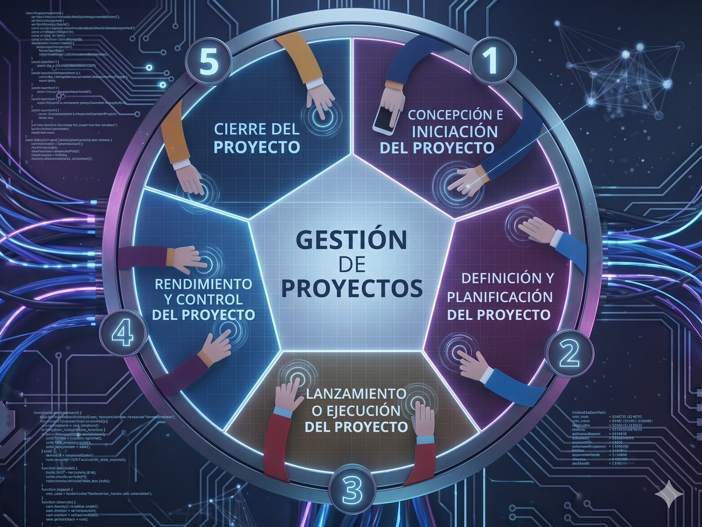
Utilizamos la IA como un copiloto de programación para eficientar el desarrollo, optimizando tiempos de codificación manual. ChatGPT me ayudó inicialmente a entender cómo estructurar la lógica del código, y posteriormente Kimi me permitió optimizar flujos gracias a prompts bien definidos.
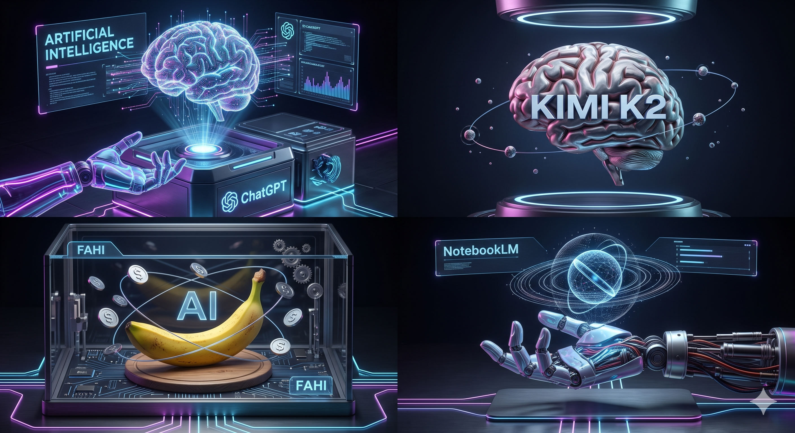
Comprendí que la base de todo software exitoso radica en comprender plenamente al cliente antes de escribir una sola línea de código. Aprendimos a identificar, analizar y documentar minuciosamente los requisitos del negocio, mitigando el riesgo de errores de diseño y costos extra.
Estudiamos técnicas de levantamiento de información como entrevistas, encuestas, observaciones y análisis documental para asegurar la alineación entre la necesidad real y el desarrollo técnico.
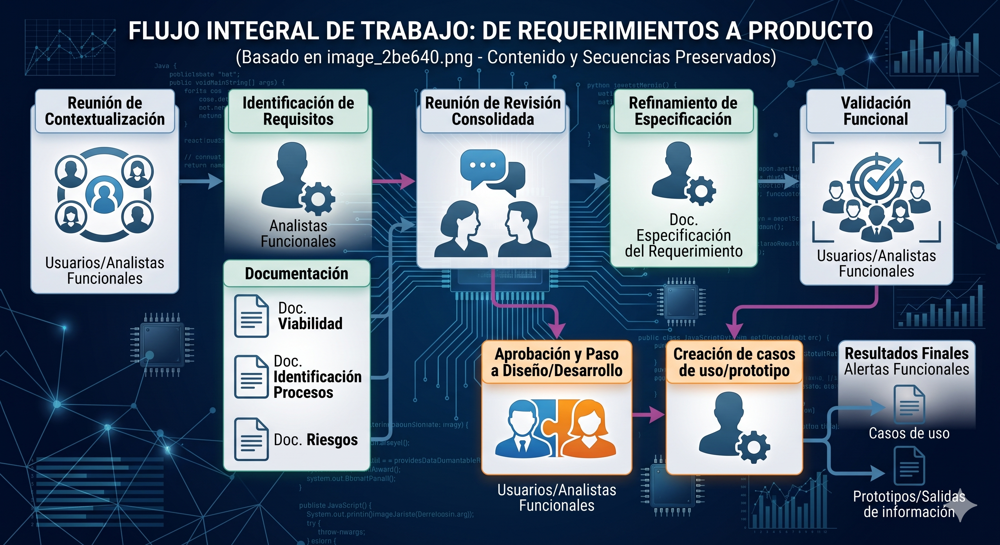
Analizamos y definimos la estructura del equipo de trabajo y los actores clave involucrados en un proyecto de software (Sponsor, Project Manager, Scrum Master, Miembros de equipo, Usuarios final, Proveedores).
Puedes profundizar en los roles y sus responsabilidades en nuestra sección de: Explorador de Roles y Requerimientos .
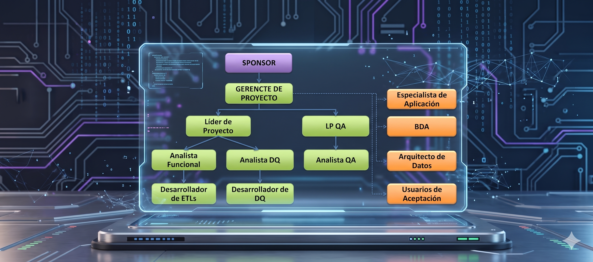
Profundizamos en el uso del Lenguaje Unificado de Modelado (UML) como pilar esencial para el diseño conceptual y lógico del sistema. Nos entrenamos en estructurar múltiples puntos de vista mediante diagramas específicos: de Casos de Uso (interacción del usuario), Actividades (flujo del proceso), Secuencia (intercambio de mensajes) y Clases (arquitectura orientada a objetos).
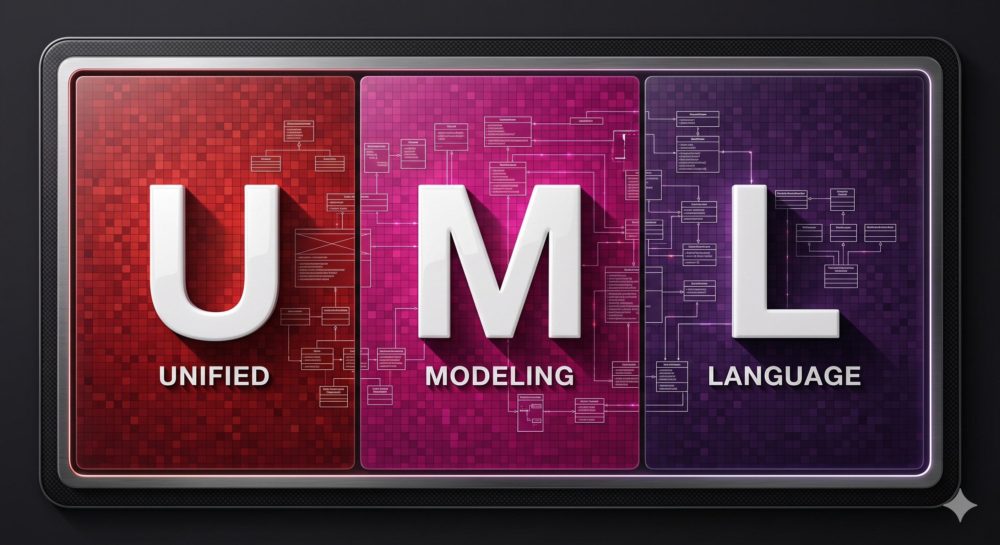
Estudiamos la trazabilidad de requerimientos para vincular cada requisito del cliente con el componente del sistema correspondiente, agilizando el control del desarrollo. Asimismo, dominamos la gestión de cambios: estructurar procesos de registro, evaluar impactos en costos y tiempos, analizar riesgos y mantener la documentación oficial alineada ante modificaciones del cliente.
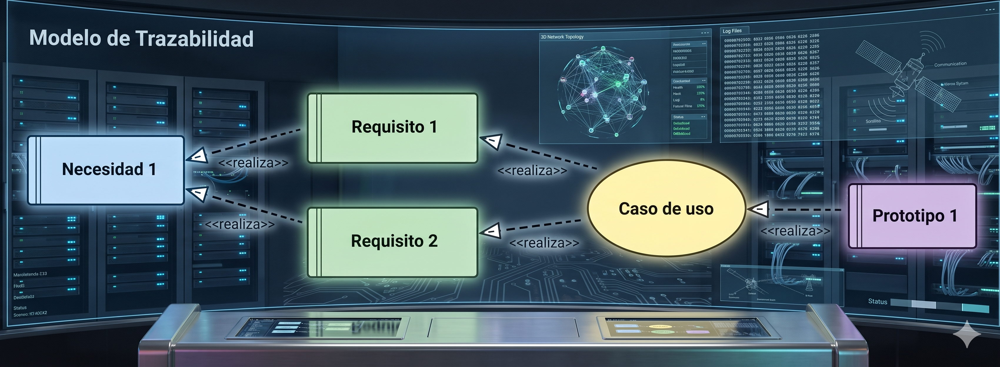
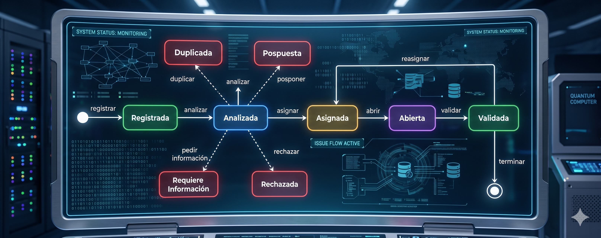